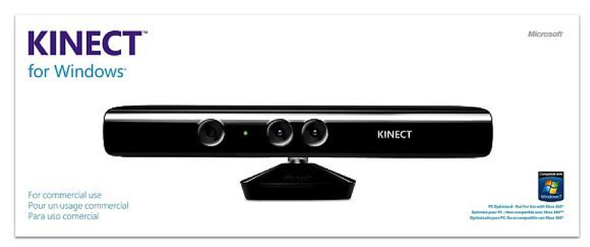
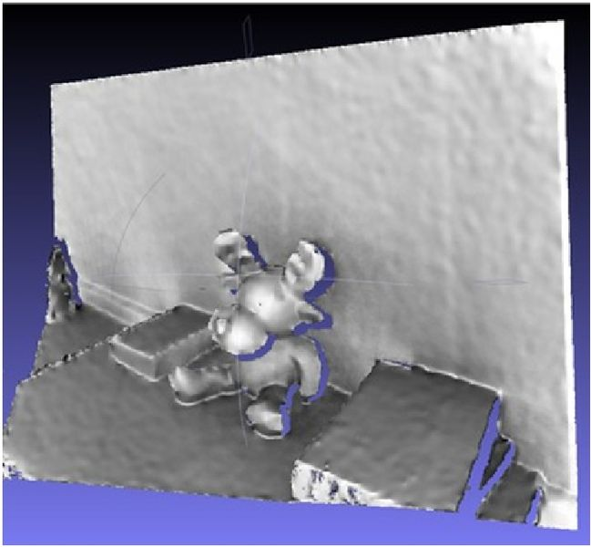

Customer Experience Management

Der Lösungsansatz

Filialbaustein: Vor dem Gebäude
- Gebäude
- Schaufenster
- Infozone
- Empfang
- Interaktionszone
- Meeting
- Showroom
- Beratung

Innovative Designelemente
Zukünftige interaktive UIs
iPad-Stele als Self-Service-System in der Filiale

Online-Analysen
adorsys Showroom in Nürnberg
Mehr Aufmerksamkeit erreichen
- Das interaktive Schaufenster
Xbox Kinect bringt berührungslose Gestensteuerung ins Wohnzimmer

Kinect als berührungslose Eingabesteuerung für Digial-Signage
Plus an Information auch außerhalb der Öffnungszeiten

Besonders wirkungvoll in Wartezonen
* Shopperception
* Shopperception
* Shopperception
Eine Vielzahl an Forschungsprojekten beschäftigt sich mit Kinect Technologien
Touch-Projektoren auf Basis von Kinect

Gestenerkennung ist längst kein Hype mehr!
"There is more than one..."
Lizenz für kommerziellen Einsatz und "Near Mode"

PrimeSense Hardware ermöglicht auch kurze Distanzen
Xtion Model von Asus

Einblick ins Innere
Microphone array
IR emitter
Tiefenberechung durch strukturiertes Licht
Durch Verschiebung der IR-Stuktur wird die Entfernung berechnet

Depth camera
3D Blick aus dem Tiefensensor

Tilt motor
USB cable
Color camera
Der optimale Abstand zur Kinect ist 0,8 bis 4 Meter
Das Kinect SDK - erkennt aus Videosignalen Personen, Bewegungen und Gesten
Aber: Microsoft Kinect SDK setzt die .NET Plattform voraus
Alternative: 
Cross Plattform
C++ SDK mit Java JNI Wrappern
OpenNI Architecture
Out of the Box: OpenNI Gesten
- Wave
- Click
- RaiseHand
- MovingHand
Hands on,
Gestenerkennung mit Java
Gestenerkennung mit Java
Warum nicht auch im Web-Browser?
, das Browser-Plugin, das Kinect-Events in den Browser sendet
User Tracking unterscheidet in "found" und "engaded" Users
Users found: 0
Users engaded: 0
Event Listener "userfound"
<!-- laden der zigfu Library -->
<script src="js/zig.js" />
<script type="text/javascript">
// Output Element holen
var usersFound = document.getElementById("usersFound");
var usersFoundCount = 0;
// Eventlistener registrieren
zig.addEventListener('userfound', function(user) {
usersFoundCount++;
usersFound.innerText = usersFoundCount;
});
zig.addEventListener('userlost', function(user) {
usersFoundCount --;
usersFound.innerText = usersFoundCount;
});
</script>
Event Listener "userengaged"
var engager = zig.EngageUsersWithSkeleton(6);
engager.addEventListener('userengaged', function(user) {
usersEngadedCount ++;
usersEngaded.innerText = usersEngadedCount;
});
engager.addEventListener('userdisengaged', function(user) {
usersEngadedCount--;
usersEngaded.innerText = usersEngadedCount;
});
zig.addListener(engager);
Positionsdaten des User Objekts
{
"id":1,
"positionTracked": true,
"position": [-690.3216552734375, -44.07337188720703, 1806.630859375],
"skeletonTracked": true,
"skeleton":{
"1":{
"id":1,
"position":[-587.3390502929688, 293.6308288574219, 1668.50903]
},
"2":{
"id":2,
"position":[-687.5590209960938, 114.9925918579102, 1799.4921875]
}
}
}
Skelet mit 24 Joint Points